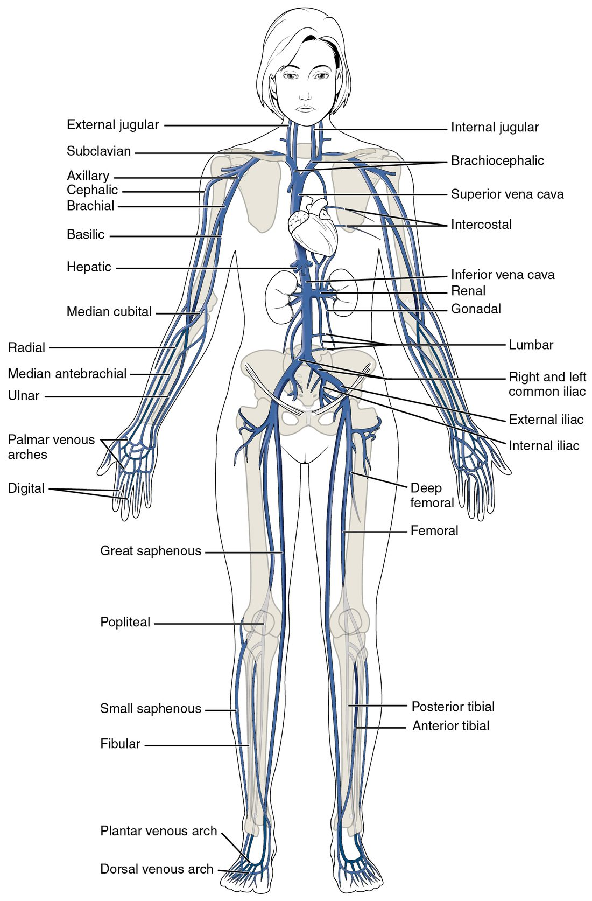

The major systemic veins
1Why this matters
A phlebotomist ties a band around Ms. Reyes's upper arm, taps the inside of her elbow, and slides a needle into the vein that rises there. Later that day, a pill Ms. Reyes swallows is mostly broken down before it ever reaches her heart. Both events depend on how her veins are laid out: which ones lie just under the skin, and where blood from the gut goes first.
2What this builds on
3Quick check before you start
1. Which great vessels return systemic blood to the heart, and which chamber do they enter?
- The pulmonary veins, into the left atrium
- The superior and inferior venae cavae, into the right atrium
- The aorta, into the left ventricle
Show the answer
The superior and inferior venae cavae return deoxygenated blood from the body to the right atrium. The pulmonary veins bring oxygenated blood from the lungs to the left atrium.
- The pulmonary veins, into the left atrium:
- Correct: The superior and inferior venae cavae, into the right atrium:
- The aorta, into the left ventricle:
2. In the hypophyseal portal system, blood passes through what before returning toward the heart?
- Two capillary beds in a row, linked by small veins
- One capillary bed and then straight into an artery
- A single capillary bed in the pituitary only
Show the answer
A portal system carries blood through two capillary beds in a row. In the hypophyseal portal system, the first is in the hypothalamus and the second in the anterior pituitary.
- Correct: Two capillary beds in a row, linked by small veins:
- One capillary bed and then straight into an artery:
- A single capillary bed in the pituitary only:
3. Which layer of the meninges is the tough outer layer?
- Pia mater
- Arachnoid mater
- Dura mater
Show the answer
The dura mater (dura = tough) is the thick outer layer. The arachnoid mater lies beneath it, and the delicate pia mater clings to the brain.
- Pia mater:
- Arachnoid mater:
- Correct: Dura mater:
4Anatomy

With labels hidden, select a box to reveal its label.
5How it works, step by step
- Blood flows through capillaries in the wall of the intestine, and absorbed nutrients and swallowed drugs enter it.The capillaries drain into the superior mesenteric vein, which joins the splenic vein behind the pancreas to form the hepatic portal vein.
- The hepatic portal vein enters the liver and branches down to a second capillary bed, the liver's sinusoids.Blood moves slowly past liver cells through the leaky sinusoid walls.
- Liver cells take up glucose and other nutrients, and enzymes in them break down drugs and toxins.The blood leaving the sinusoids carries less of each swallowed substance than the blood that arrived.
- The sinusoids drain into the hepatic veins, which empty into the inferior vena cava.Only this processed blood reaches the right atrium and the rest of the body, which is why a swallowed drug loses part of its dose on its first pass through the liver.
6Core concepts
7A common mistake
The wrong idea: Blood from the stomach and intestines drains straight into the inferior vena cava, like blood from the kidneys.
What actually happens: No vein from the stomach, intestines, spleen or pancreas joins the inferior vena cava. Their blood collects into the hepatic portal vein and passes through the liver's sinusoids first, then reaches the inferior vena cava through the hepatic veins. The kidneys, gonads and legs do drain straight into the inferior vena cava system.
8Check yourself
Anything you miss goes into your review queue.
1. Name the pinned vein.
- Cephalic vein
- Median cubital vein
- Basilic vein
- Brachial vein
Show the answer
The median cubital vein (cubit- = elbow) crosses the front of the elbow diagonally between the cephalic and basilic veins. It is the usual site for drawing blood.
- Cephalic vein: The cephalic vein runs up the thumb side of the forearm and the outer arm. It is one of the two veins the pinned vein connects.
- Correct: Median cubital vein: Correct. The median cubital vein links the cephalic and basilic veins in front of the elbow.
- Basilic vein: The basilic vein runs up the little-finger side and the inner arm. It is the other vein the pinned vein connects.
- Brachial vein: The brachial veins are deep veins that run beside the brachial artery. They are not visible under the skin.
2. Name the pinned vein.
- Brachiocephalic vein
- Superior vena cava
- Azygos vein
- External jugular vein
Show the answer
Behind each sternoclavicular joint, the internal jugular and subclavian veins join to form a brachiocephalic vein. The right and left brachiocephalic veins then join to form the superior vena cava.
- Correct: Brachiocephalic vein: Correct. There are two brachiocephalic veins, unlike the single brachiocephalic trunk on the arterial side.
- Superior vena cava: The superior vena cava is formed one step later, where the two brachiocephalic veins meet.
- Azygos vein: The azygos vein drains the chest wall and joins the back of the superior vena cava.
- External jugular vein: The external jugular vein is a superficial neck vein that drains into the subclavian vein.
3. A glucose molecule is absorbed into a capillary in the wall of the intestine. Put its route to the right atrium in order.
- Superior mesenteric vein
- Hepatic portal vein
- Sinusoids of the liver
- Hepatic veins
- Inferior vena cava
- Right atrium
Show the answer
Intestinal capillaries drain into the superior mesenteric vein, which joins the splenic vein to form the hepatic portal vein. That vein branches to the liver's sinusoids, the second capillary bed. The sinusoids drain into the hepatic veins, which empty into the inferior vena cava just below the diaphragm.
- Correct order: 1. Superior mesenteric vein 2. Hepatic portal vein 3. Sinusoids of the liver 4. Hepatic veins 5. Inferior vena cava 6. Right atrium
4. A drug is 90% broken down by the liver on its first pass. A patient receives the same dose once as a pill and once by IV into an arm vein. Why does far less of the swallowed dose reach the rest of the body?
- Gut blood passes through the liver first
- The stomach's acid destroys most drugs before absorption
- Arm veins deliver drug straight to the liver
- Swallowed drug enters the inferior vena cava first
Show the answer
Blood from the gut goes through the hepatic portal vein to the liver's sinusoids before it can reach the heart. The liver breaks down much of the drug on this first pass. IV drug in an arm vein goes to the heart and out to the body without passing through the liver first.
- Correct: Gut blood passes through the liver first: Correct. The hepatic portal system routes everything absorbed from the gut through the liver first.
- The stomach's acid destroys most drugs before absorption: Stomach acid does break down some drugs, but the question states that the liver removes most of this one. Acid alone does not explain a 90% loss.
- Arm veins deliver drug straight to the liver: Arm veins drain through the subclavian and brachiocephalic veins to the superior vena cava and the heart. They do not lead to the liver.
- Swallowed drug enters the inferior vena cava first: Gut veins do not drain into the inferior vena cava directly. Blood reaches it only after passing through the liver.
5. Select every vein that is superficial, running under the skin with no artery beside it.
- Cephalic vein
- Femoral vein
- Basilic vein
- Great saphenous vein
- Popliteal vein
- External jugular vein
Show the answer
The cephalic, basilic, great saphenous and external jugular veins run in the fat under the skin and have their own names. Deep veins such as the femoral and popliteal veins run beside arteries of the same name.
- Correct: Cephalic vein: Correct. The cephalic vein runs up the thumb side of the arm under the skin.
- Femoral vein: The femoral vein is a deep vein beside the femoral artery.
- Correct: Basilic vein: Correct. The basilic vein runs up the inner forearm and arm under the skin before diving deep.
- Correct: Great saphenous vein: Correct. The great saphenous vein runs up the inner leg under the skin.
- Popliteal vein: The popliteal vein is a deep vein behind the knee, beside the popliteal artery.
- Correct: External jugular vein: Correct. The external jugular vein runs across the side of the neck just under the skin.
6. A student traced blood from the back of the right hand to the heart along the superficial route. Which step is wrong?
- Veins on the back of the hand drain into the cephalic vein on the thumb side
- The cephalic vein drains into the axillary vein
- The axillary vein continues as the subclavian vein
- The subclavian vein drains straight into the superior vena cava
- The superior vena cava empties into the right atrium
Show the answer
The subclavian vein first joins the internal jugular vein to form the right brachiocephalic vein. Only then do the right and left brachiocephalic veins form the superior vena cava.
- Veins on the back of the hand drain into the cephalic vein on the thumb side: This step is right. The cephalic vein starts from the network on the back of the hand, on the thumb side.
- The cephalic vein drains into the axillary vein: This step is right. The cephalic vein runs up the outer arm and drains into the axillary vein near the shoulder.
- The axillary vein continues as the subclavian vein: This step is right. The axillary vein is renamed subclavian at the outer edge of the first rib.
- Correct: The subclavian vein drains straight into the superior vena cava: This is the error. A brachiocephalic vein sits between the subclavian vein and the superior vena cava.
- The superior vena cava empties into the right atrium: This step is right. The superior vena cava enters the top of the right atrium.
7. How does a dural venous sinus differ from an ordinary vein?
- It carries oxygenated blood
- No smooth muscle or valves; dura holds it open
- It has a thicker tunica media than any artery
- It carries cerebrospinal fluid instead of blood
Show the answer
A dural sinus is a channel between the two layers of the dura mater, lined by endothelium. Its wall has no smooth muscle and it has no valves; the stiff dura keeps it open.
- It carries oxygenated blood: Dural sinuses carry deoxygenated blood from the brain, like other systemic veins.
- Correct: No smooth muscle or valves; dura holds it open: Correct. Its wall is dura, not a three-layered vessel wall.
- It has a thicker tunica media than any artery: A dural sinus has no tunica media at all. Its wall is made of dura.
- It carries cerebrospinal fluid instead of blood: Cerebrospinal fluid drains into the superior sagittal sinus and mixes with the blood there, but the sinuses carry venous blood.
9Summary
Veins join as they approach the heart. Above the diaphragm, each internal jugular vein meets a subclavian vein to form a brachiocephalic vein, and the two brachiocephalic veins form the superior vena cava, which also receives the azygos vein from the chest wall. The brain drains through dural venous sinuses, channels in the dura with no muscle or valves: superior sagittal, straight, transverse and sigmoid sinuses lead to the internal jugular vein. Below the diaphragm, the common iliac veins form the inferior vena cava, which receives lumbar, gonadal, renal and hepatic veins. Deep limb veins share their arteries' names; the superficial cephalic, basilic, median cubital, great and small saphenous veins run under the skin. Blood from the gut and spleen travels through the hepatic portal vein to the liver's sinusoids before reaching the inferior vena cava.